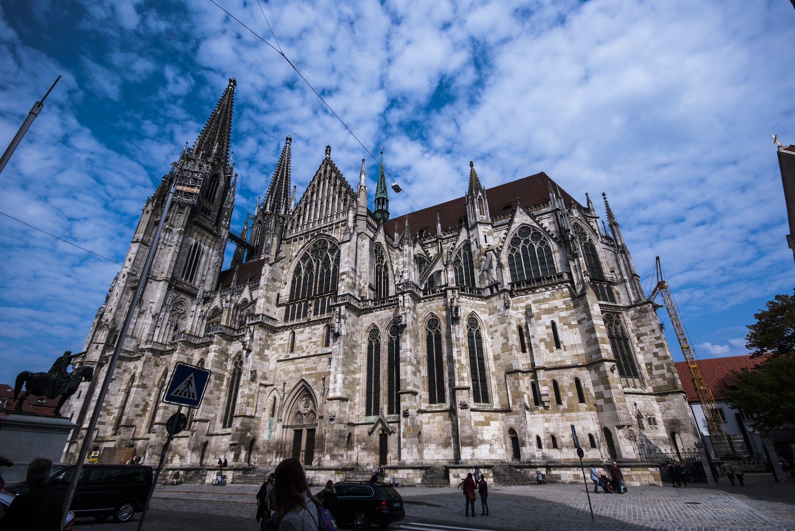

Regensburger Dom
Domplatz 1, 93047 RegensburgDer Regensburger Dom (auch: Dom St. Peter, benannt nach dem hl. Petrus) ist
die bedeutendste Kirche der Stadt Regensburg und die Kathedrale des Bistums Regensburg. Der Dom gehört
neben dem Kölner Dom zu den bedeutendsten gotischen Kathedralen in Deutschland.
In Nachfolge eines romanischen Doms, von dem noch ein Turm (Eselsturm) erhalten ist, begann der Bau
des gotischen Doms 1275. Ab 1450 war das Gebäude überdacht und nutzbar. Der Ausbau der beiden Domtürme
und der Turmhelme erfolgte aber erst von 1859 bis 1869.

Tipp: Figur des „lachenden Engels“ am südwestlichen Vierungspfeiler